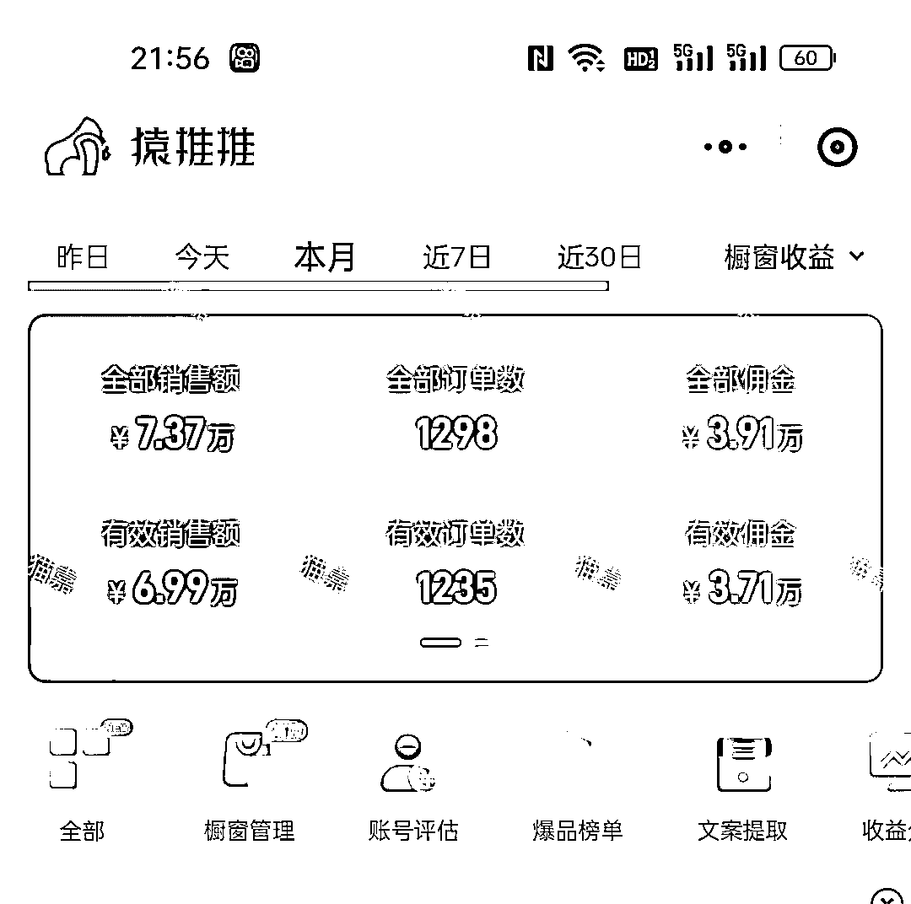
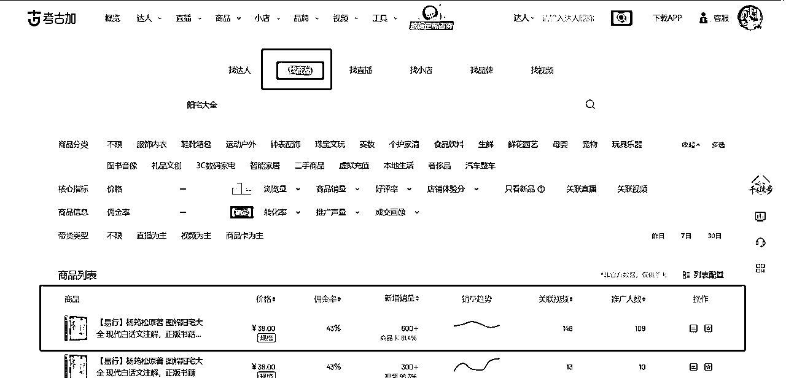
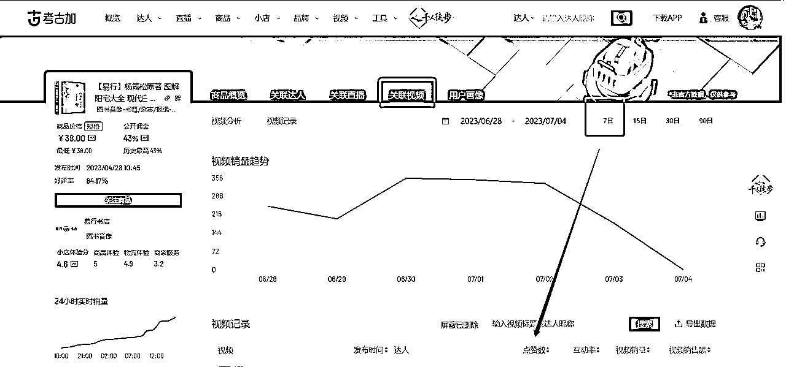
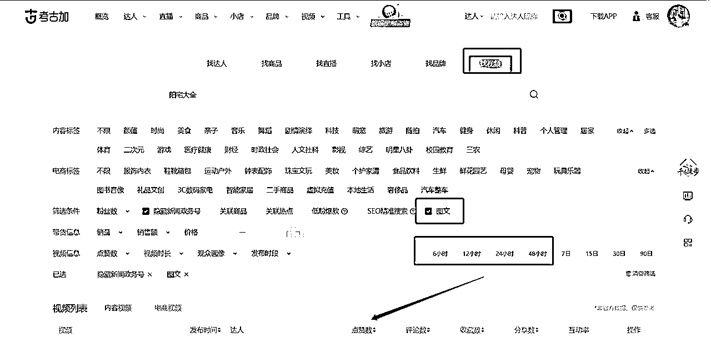
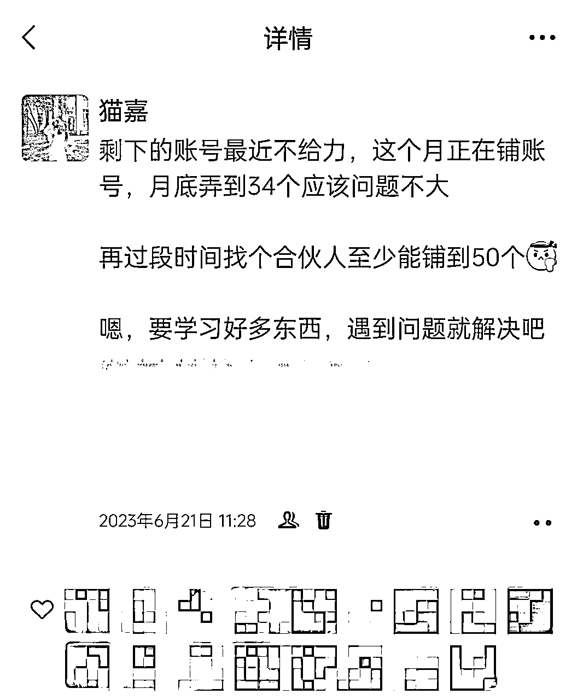

来源：https://s31nx3n9vr.feishu.cn/docx/ZvZ1d1RRcoKOu9xJsxPcxQPGnTe
大家好，我是猫嘉，一个去年本科毕业即全职投入网赚的01年女生，目前在广西
现在做的是抖音养生号，6月份在无爆单的情况下平静地赚了3.7w

抖音养生号选品跟品的相关操作，详见上个月的这篇复盘贴：
爆单人人都爱，但这毕竟要点运气加持。这篇复盘主要为大家分享：在没有爆单的情况下，如何保证稳定的收入
先说结果——
6月初，我手上一共18个账号，其中12个是带货号。凭借这样的账号数量，前半个月稳定日佣过千的次数很多，表现好的时候能够日佣小几千，日佣过千的话我就会在群里发红包。
出单的有中医起号以及刷粉号，但是刷粉号6月的表现为能稳定出单，但是一直不爆单
6月中旬因为带养生汤包把一半的号都给封进去了，还有几个号因为个人的原因要注销相应的营业执照，所以要停止发布带货视频，等待佣金提出以注销账号，月收益截止在3.7w
账号数量涉及几个要素：手机号、手机设备、实名、收款
（1）手机号
三大通信营业厅，一个人可以各办5张（不是一次性办理）。我用实体卡，不用虚拟号。
我一般更喜欢线下办卡，我这边实测营业厅办的卡跳实名情况很少，十个号只跳一个，但是网上办的容易跳。
如果营业厅办卡实在不方便，那就网上办，跳实名直接找人实名
（2）手机设备
一个手机成本一千出头，我现在统一用新机，不再用二手机，因为手机卡影响工作效率
（3）实名
我找亲戚朋友，不用野实名，这样即使后续跳人脸也好解决
（4）收款
我这边1个人对应1张银行卡可以收款5个抖音，账号数量扩大意味着收款数量也会扩大，我是跟亲戚商量好让他帮忙收款，我给他分10%的利润。之后再扩大会考虑用对公账户收款或者找合伙人
为什么要选爆品？因为它能让你大概率出单
爆品就是你的对标账号在一个时间段内都在跟的品，寻找爆品利用数据榜单+观察对标账号
（1）看榜单
我一般会在巨量百应观察短时间内销量上升比较快的品，看1小时和24小时的，找中老年喜欢的书，然后回到考古加寻找对标视频。
考古加找视频有两种方法，一个是在【商品】模块找到商品再找到视频，另一种是直接在【视频】模块搜商品。因为我最近发现直接在【商品】模块找，会漏掉一些最新点赞还不错的视频
这是第一种搜索方法：


这是第二种，最近图文带货大热，选择图文：

（2）观察对标账号
有一点值得一提：真人出镜做爆一个品是很猛的
如果你的真人对标账号口播爆了，你可以把他的视频抠像做视频带货、抠像发流量视频配无人直播、商品实拍配他的口播音频做图文带货。如果你的表现力好，也可以一比一复制一波真人口播
抖音养生号已经不是靠信息差赚钱了，所有新品、爆品的信息在网上都能搜到。现在拼的就是执行力，各凭本事赚钱
那么要怎样拼执行力才能赚到更多的钱呢？
尽自己所能，在最短的时间内铺账号、实名、起号、开橱窗、跟爆品
在有些方面比如收款，刚开始是比较松的，一个人可以收款十几个抖音，现在开始收紧了。在抖音的政策收紧之前，尽快行动为好
同等的时间拼效率。设备要丝滑，很卡的二手手机我现在都换成新机了；工作流程要有条有理，账号信息和每天的剪辑任务都用表格梳理出来
账号数量决定你的收益天花板，除非你是天选号。
有人说他很难扩大账号数量，我想说，是你的赚钱欲望还不够强。
我都建议是：先尽自己所能把账号铺到最多，再往上可以找合伙人，让让利，总是有办法的
自从能带货的账号几乎都被打进去后，说实话看着大家天天赚几千上万，我很焦虑。
还好微笑一次次的强调深入我心：目的是大概率的稳定出单，而非以小博大，追求小概率的爆单
这时候我决定：继续铺号！
短期的爆单我无法掌握，但等我的账号数量铺上之后，我能吃到的爆品利润会更多。
现在我手上一共有30个账号了，本来说是要铺到34个的，但是营业厅办卡不能一次性办很多，所以后面打算网上办。

真人出镜的账号权重明显比单纯实拍混剪的号要高，由真人出镜转战图文带货很容易做爆，推测是因为原创度更高。
因为考虑到效率问题，我打算用ai小和尚发流量视频，冲到万粉，提高账号权重，带货还是用平常的方法
这个月感触最深的是，庆幸自己养成了复盘的习惯，不管是项目上还是个人成长上
在项目上找出一天中做的好和不好的地方，不断优化；
个人成长上就是内观自己：做事是否更有条理、心态是否积极向上、遇到困难的第一反应是进是退等等，确保每一天都比昨天有所进步
担心搞不到实名，担心解决不了收款问题......没行动之前，都是给自己折纸老虎
如果你的畏难情绪很严重，不要拖，直接把你觉得困难的放在事项表第一位，先解决它
不要说自己不行，要说自己暂时还做不到，允许自己用一段时间解决问题
非常感谢星主亦仁提供了这么高质量的平台，让我认识了更多的小伙伴，很开心能够与大家以真诚换真诚。
感谢微笑不断纠正我的项目思维，并用自己的能量感染我，现在我的能量也越来越强啦！
希望这次的复盘能帮到大家，欢迎一起交流，未来一起进步！